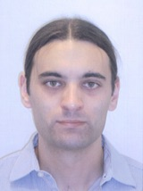

Andrea RosàI am a Postdoctoral Researcher at the Faculty of Informatics of Università della Svizzera italiana (USI) in Lugano, Switzerland. I'm working in the Dynamic Analysis Group (DAG). My research interests include concurrency and parallelism, program analysis, virtual machines and big-data computing. I received the PhD in Informatics from Università della Svizzera italiana (USI) in 2018, advised by Prof. Walter Binder. Previously, I received the MSc and BSc in Computer Science Engineering from Politecnico di Milano. |
 |
Personal Information
- Email: andrea [dot] rosa [at] usi [dot] ch
- CV: [PDF]
- Profiles: DBLP, Google Scholar, ResearchGate, GitHub, LinkedIn.
- Address: Università della Svizzera italiana, Faculty of Informatics, Office SI-205, Via Giuseppe Buffi 13, CH-6904 Lugano, Switzerland.
- Phone: +41 58 666 4455 ext. 2183
Note: to call my office, first dial +41 58 666 4455; then, when the operator answers, dial # followed by 2183.
Selected Publications
-
Analysis and Optimization of Task Granularity on the Java Virtual Machine [link]
Andrea Rosà, Eduardo Rosales, Walter Binder.
ACM Transactions on Programming Languages and Systems (TOPLAS), 41(3):19:1-19:47, July 2019. Presented at CGO 2018. -
Automated Large-scale Multi-language Dynamic Program Analysis in the Wild [link]
Alex Villazón, Haiyang Sun, Andrea Rosà, Eduardo Rosales, Daniele Bonetta, Isabella Defilippis, Sergio Oporto, Walter Binder.
ECOOP 2019, with approved artifact. -
Renaissance: Benchmarking Suite for Parallel Applications on the JVM [link] [technical report]
Aleksandar Prokopec, Andrea Rosà, David Leopoldseder, Gilles Duboscq, Petr Tuma, Martin Studener, Lubomìr Bulej, Yudi Zheng, Alex Villazón, Doug Simon, Thomas Würthinger, Walter Binder.
PLDI 2019, with approved artifact. -
Optimizing Type-specific Instrumentation on the JVM with Reflective Supertype Information [link]
Andrea Rosà, Walter Binder.
Elsevier Journal of Visual Languages & Computing, 49:29-45, Dec. 2018. Presented at GPCE 2017. -
Failure Analysis and Prediction for Big-Data Systems [link]
Andrea Rosà, Lydia Y. Chen, Walter Binder.
IEEE Transactions on Services Computing, 10(6): 984-998, Nov-Dec 2017.
-
Actor Profiling in Virtual Execution Environments [link]
Andrea Rosà, Lydia Y. Chen, Walter Binder.
ACM SIGPLAN Notices, 52(3):36-46, Mar. 2017. Presented at GPCE 2016. -
Understanding the Dark Side of Big Data Clusters: An Analysis beyond Failures [link]
Andrea Rosà, Lydia Y. Chen, and Walter Binder.
DSN 2015. -
Predicting and Mitigating Jobs Failures in Big Data Clusters [link]
Andrea Rosà, Lydia Y. Chen, and Walter Binder.
CCGrid 2015.
A complete publication list can be found in my CV.
Software
-
Renaissance [link]
A modern, open, and diversified benchmark suite for the JVM, aimed at testing JIT compilers, garbage collectors, profilers, analyzers and other tools. -
tgp [link]
A tool for profiling task granularity on the JVM. -
AkkaProf [link]
A tool for profiling Akka actors in parallel and distributed applications.
A complete list of software which I have contributed to can be found in my CV.